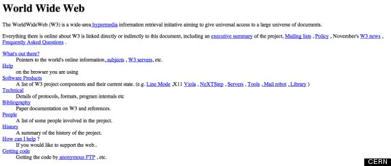
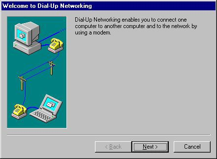
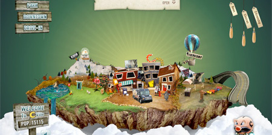

1990 Begin Webdesign

In het begin van webdesign waren websites nogal saai en niet heel erg interactief, het was een soort manier voor mensen om hun brieven te digitaliseren.
Het online maken van een website was toen een prestatie. In deze primitieve fase werd er gebruik gemaakt van tables, dit was bedoeld voor structuur voor nummers
maar dit werd later gebruikt om structuur te creëren voor websites.
Dit bracht problemen met zich mee omdat dit erg moeilijk was bij te houden. Dit heeft later veel bijgedragen aan grids.
1991 Internet gaat public
Doordat het internet beschikbaar werd voor een heel groot publiek namelijk de hele wereld (die het konden betalen) onstond er een grote groei in de ontwikkeling van web design. CERN (De allereerste website) hoopte dat mensen aan de slag gingen met hun website en gaven ook de code weg aan de mensen, hierdoor begonnen web browsers te ontstaan.
1994 Advertenties op websites

Advertenties begonnen zich te vinden op het wereld wijde web en dit zorgde ervoor dat mensen slim moesten zijn in het verstoppen van advertenties want mensen willen natuurlijk niet onnodige informatie zien.
Het ontwerp van advertenties werden zo aangepakt dat er weinig tekst werd gebruikt en meer design elementen om de gebruiker te leiden naar hun advertentie.
Hierdoor werden mensen slimmer in het maken van ontwerpen en dit zorgde weer voor een grote toename in aantal websites.
1995 Javascript!

Enter Javascript, alles waar HTML niet in staat was kon JavaScript wel voor zorgen. Pop ups, het aanpassen van elementen, JavaScript kon het allemaal. JavaScript gaf wat leven aan het saaie HTML en zorgde voor beweging. Nadeel van JavaScript is dat het via een aparte file samen moet worden uitgevoerd met de HTML waardoor de website langzamer er van werd. Later zijn vele van de functies van JavaScript ook te bereiken met CSS maar daar heb ik het later verder over.
1996 Flash verandert webdesign
Flash zorgde voor een grote verandering in webdesign. Ontwerpers konden voor het eerst hun websites veel aantrekkelijker maken en animaties toevoegen dankzij een tool. Het werd in een file gestopt en opgestuurd naar de browser om te weergeven. Dit werkte goed wanneer je de Flash plugin geïnstalleerd had tenminste en tijd had om te wachten tot het geladen was. Hierdoor kregen websites splash pagina’s en allerlei interactieve effecten. Echter was dit zwaar voor de computer om uit te voeren en mensen konden het niet makkelijk vinden.
1998 CSS brengt stijl

Rond de tijd van Flash begon er een nieuwe en betere manier zich voor te doen voor het maken van gestructureerde ontwerpen namelijk de Cascading Style Sheets. Het werkt samen met HTML in twee aparte componenten. Het uiterlijk wordt aangeleverd door CSS en de inhoud van een pagina wordt geleverd via HTML. Het duurde even voordat browsers CSS volledig konden gebruiken en zelfs dan had het zo zijn nadelen. Gelukkig wordt het nog steeds gebruikt en is het een van de belangrijkste talen die web design heeft.
2007 Mobiele tijdperk
In 2007 werd de eerste iPhone gelanceerd, dit zorgde voor een geheel nieuw tijdperk in web design. Bij de opkomst van mobiele websites moest er nagedacht worden hoe ze dit willen vormgeven. Zouden ze websites hetzelfde moeten houden op die kleine schermen, dit zou betekenen dat bijvoorbeeld advertenties of hele nieuwsartikelen heel lastig zijn om te lezen maar hiervoor hebben ze iets bedacht. Het gebruik maken van kolommen en grids. Dit gaf een goede structuur en maakt het voor ontwerpers makkelijk om hun content in te vullen. Maar dankzij de komst van mobiele netwerk is er ook Responsive Design ontstaan.
2010 Responsive design

Mobiele internetgebruik schoot door het dak en dus moesten ontwerpers gaan ontwerpen met het idee dat ze eerst voor een mobiel iets ontwerpen en dan pas voor andere platformen. Een web designer genaamd Ethan Marcotte besloot om in plaats van een aparte mobiele site te maken, een site met dezelfde content te behouden alleen met verschillende layouts en ontwerpen wat afging op schermgrootte. Hierdoor werd responsive design geboren. De hoofdreden waarom Responsive Design zo belangrijk is, is dat het dezelfde website is die overal op werkt.